Oberth Effect
Burn deep in a gravity well and your fuel does more work — physically the same engine produces more orbital energy when it's moving fast.

101 · zoom in
Here's a free magic trick from physics. Imagine you have one specific amount of fuel to burn. You can light it whenever you want. Where should you do it? Common sense says it shouldn't matter — same fuel, same engine, same push. Common sense is wrong.
Burn it when you're going FAST and the same fuel gives you way more useful energy than the same burn when you're going slow. The reason hides in the fact that kinetic energy goes as v² — when you're already moving, a small ∆v on top adds proportionally more energy than when you're standing still. So a 1 km/s burn at perigee (going 11 km/s) gives you more orbital boost than the same 1 km/s burn at apogee (going 1 km/s).
Hermann Oberth pointed this out in 1929 and mission designers have been exploiting it ever since. Apollo's trans-lunar injection happened at perigee, hugging Earth, going as fast as possible. Parker Solar Probe burns at the closest pass to the Sun on every loop to dive deeper next time. It's not free energy — the planet you're hugging is doing the donation — but it's the closest thing to a free lunch you'll ever find in spaceflight.
The kinetic energy of a moving body goes as `½ m v²`. A small ∆v at high speed produces a much larger change in kinetic energy than the same ∆v at low speed. Apply this to a rocket burn: do the burn at periapsis (where you're moving fastest) and the same propellant produces more orbital-energy gain than it would at apoapsis.
Hermann Oberth pointed this out in 1929. The implication for mission design: schedule your big ∆v burns where you're already moving fast — at perihelion of the cruise ellipse, at periapsis of a flyby. Parker Solar Probe burns at perihelion of each Sun-passing arc to drop deeper toward the Sun on the next loop. Juno fires at jovian periapsis to control its science orbit.
The trade-off: deep-well burns are short and intense; the spacecraft has to be ready to handle the heat, the dynamic pressure, and the precision timing. There's no free lunch — but Oberth shows you which lunches are cheaper.
SEE IN THE APP
- /missions Parker Solar Probe and Juno burn near periapsis to exploit Oberth